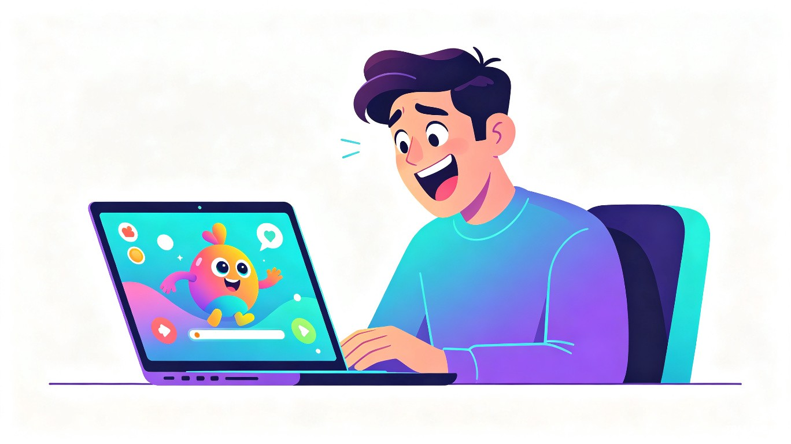
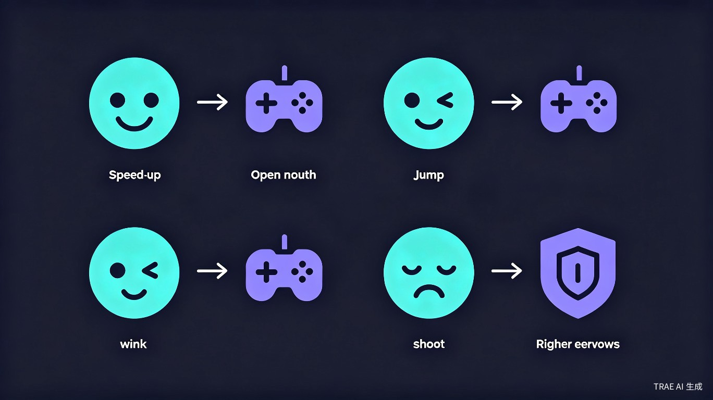
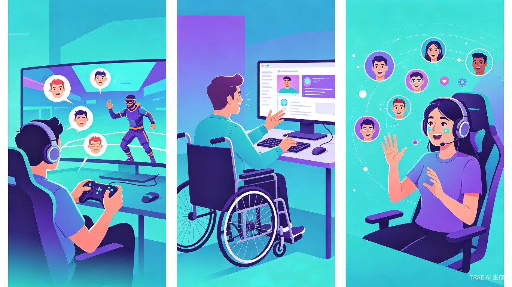

用你的脸玩游戏、控制应用、无障碍交互——零硬件、纯摄像头、实时响应

想解决什么问题：传统人机交互依赖键盘、鼠标、手柄等物理设备，双手被占用时无法操作（如做饭时看菜谱）、肢体障碍人群使用困难、游戏体验缺乏身体参与感。我们希望让人脸成为下一代交互控制器。
灵感来源：看到TikTok上的表情挑战滤镜爆火，几亿人乐此不疲地用表情触发特效。如果这种"表情→动作"的映射不仅限于娱乐滤镜，而是能控制真实应用和游戏，那将是一种全新的交互范式。
产品形态：一款基于浏览器摄像头 + AI面部表情识别的实时交互引擎。用户只需对着摄像头做表情（笑、张嘴、眨眼、挑眉等），就能控制游戏角色、操作应用、浏览网页。零额外硬件，打开浏览器就能用。

追求新颖交互体验的玩家，想要"用脸玩游戏"的趣味感和直播节目效果
肢体残疾、手部受伤等无法使用传统输入设备的人群，用面部表情替代双手操作
直播中用表情触发特效、与观众互动，增加节目娱乐性和观众参与感
做饭看菜谱、修理看教程、运动看指导时，用表情翻页/暂停，解放双手

全球游戏市场2025年达1870亿美元，其中互动娱乐和直播市场增速超25%。FacePlay采用"免费引擎+付费模板+创作者分成"模式：基础表情控制SDK免费开放，高级游戏模板和特效商店收费，创作者上传自定义表情包获分成。预计上线首年触达50万用户，通过模板商店和API授权实现营收。
数字无障碍革命：为全球13亿肢体障碍人群提供零成本、零硬件的交互方案，让他们也能享受游戏和互联网。健康互动：鼓励用户活动面部肌肉，对缓解面部神经疲劳、辅助面瘫康复有潜在价值。教育创新：儿童通过表情互动学习，提升情绪认知和表达能力。
| 层级 | 组件 | 技术方案 |
|---|---|---|
| 感知层 | 摄像头输入 | 浏览器 getUserMedia API 获取实时视频流，支持手机/电脑前置摄像头 |
| 识别层 | 面部表情识别 | MediaPipe Face Mesh 468点面部关键点检测 + 自研表情分类模型（笑/张嘴/眨眼/挑眉/皱眉等） |
| 映射层 | 表情→指令映射 | 可自定义映射规则引擎，支持单表情触发、组合表情、表情强度（微笑程度=加速力度） |
| 应用层 | 多场景应用 | Web游戏SDK、网页控制器、直播OBS插件、无障碍辅助工具 |
本方案将摄像头（现有硬件）作为输入设备，通过AI将面部表情转化为控制指令，本质上是重新定义人机交互的输入方式——用人的脸替代键盘/手柄。这正是硬件交互赛道的核心：创新人与设备之间的交互方式。无需额外硬件恰恰是最大优势——降低使用门槛，让任何有摄像头的设备都能成为交互终端。
核心创新点：
笑脸加速、张嘴跳跃、眨眼射击、挑眉防御，用脸玩跑酷、射击、赛车等游戏
用表情控制鼠标移动、点击、滚动、输入，替代键盘鼠标，帮助肢体障碍人群上网
主播用表情触发屏幕特效、弹幕互动、音效播放，增强直播娱乐性
做饭/修理时用表情翻菜谱、暂停视频、切换页面，解放双手
可视化拖拽配置表情-动作映射，支持导入/分享自定义配置方案
提供JavaScript SDK，3行代码接入表情控制，任何网页游戏都能用脸玩
| 维度 | 传统手柄/键盘 | 体感设备(Wii/Quest) | 语音助手 | FacePlay |
|---|---|---|---|---|
| 所需硬件 | 手柄/键盘 | 专用体感设备 | 麦克风 | 仅摄像头（设备自带） |
| 使用门槛 | 需要学习按键 | 需要购买+佩戴 | 安静环境 | 零门槛，打开即用 |
| 控制精度 | 高 | 高 | 低（离散指令） | 中高（连续模拟量） |
| 双手占用 | 是 | 是 | 否 | 否 |
| 娱乐性 | 中 | 高 | 低 | 极高（表情本身有趣） |
第一阶段（0-3个月）：完成核心引擎开发，上线Web Demo（1-2款内置小游戏），开源SDK，在GitHub和社区推广。
第二阶段（3-6个月）：上线表情映射编辑器和模板商店，引入创作者生态，与独立游戏开发者合作接入。
第三阶段（6-12个月）：推出无障碍辅助模式（无障碍认证），上线直播OBS插件，目标100万活跃用户。
远期愿景：让"表情交互"成为继键盘、鼠标、触摸、语音之后的第五种主流人机交互方式。